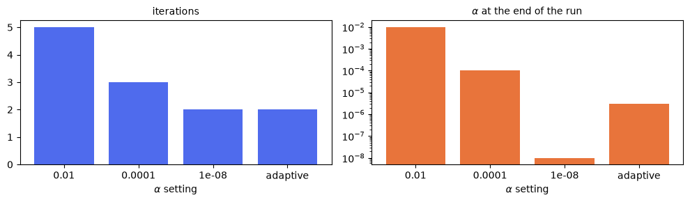

Part D: Adaptive alpha#
Parts A to C all picked \(\alpha\) by hand and kept it fixed, which means committing to one compromise for the whole run. A small \(\alpha\) approximates the original problem better and converges in fewer iterations, but conditions the diagonalization worse, so round-off and inexact inner solves get amplified. The right balance shifts as the residual falls, so a fixed value is wrong at one end of the run or the other.
The AdaptiveAlpha convergence controller updates \(\alpha\) after every iteration instead, following
Čaklović et al.:
with \(L\) the number of steps in the block, \(\epsilon\) machine precision, \(\tau\) the inner solver tolerance, \(r_k\) the residual and \(e_k\) a running bound on the error.
The setup#
We compare a few fixed values of \(\alpha\) with the adaptive one on the advection problem of
Part C, but with a direct solver for the complex shifted systems ParaDiag produces instead
of GMRES, which struggles with them. The setup lives in paradiag_setup.py next to this tutorial, because
Part E uses exactly the same. Switching to the adaptive strategy is one entry in the description:
def get_controller_params(alpha):
"""
Controller parameters for one alpha setting.
Args:
alpha: a number, or the string 'adaptive'
Returns:
tuple: the controller parameters and the extra description entries
"""
from pySDC.implementations.convergence_controller_classes.adaptive_alpha import AdaptiveAlpha
controller_params = {}
controller_params['logger_level'] = 30
controller_params['average_jacobian'] = False
extra_description = {}
if alpha == 'adaptive':
# the adaptive controller overwrites this from the first iteration onwards, but ParaDiag needs
# some alpha to build its first transform with
controller_params['alpha'] = 1e-4
extra_description['convergence_controllers'] = {AdaptiveAlpha: {}}
else:
controller_params['alpha'] = alpha
return controller_params, extra_description
And run sets up the controller, the virtually parallel one when it gets no communicator:
def run(alpha, block_size, comm=None):
"""
Run the advection problem with one alpha setting.
Args:
alpha: a number, or the string 'adaptive'
block_size (int): number of time-steps in one block
comm: MPI communicator, or None for the virtually parallel controller
Returns:
tuple: the end value, the iteration count, the error and the final alpha
"""
import numpy as np
from pySDC.helpers.stats_helper import get_sorted
controller_params, extra_description = get_controller_params(alpha)
description = {**get_description(), **extra_description}
if comm is None:
from pySDC.implementations.controller_classes.controller_ParaDiag_nonMPI import controller_ParaDiag_nonMPI
controller_params['mssdc_jac'] = False
controller = controller_ParaDiag_nonMPI(
controller_params=controller_params, description=description, num_procs=block_size
)
steps = controller.MS
else:
from pySDC.implementations.controller_classes.controller_ParaDiag_MPI import controller_ParaDiag_MPI
controller = controller_ParaDiag_MPI(controller_params=controller_params, description=description, comm=comm)
steps = [controller.S]
# ParaDiag diagonalizes in time, so the solution becomes complex
for S in steps:
S.levels[0].prob.init = tuple([*S.levels[0].prob.init[:2]] + [np.dtype('complex128')])
P = steps[0].levels[0].prob
dt = steps[0].levels[0].params.dt
Tend = num_steps_total * dt
uend, stats = controller.run(u0=P.u_exact(0.0), t0=0.0, Tend=Tend)
niter = max(int(me[1]) for me in get_sorted(stats, type='niter', sortby='time', comm=comm))
return uend, niter, abs(uend - P.u_exact(Tend)), controller.params.alpha
from pathlib import Path
import matplotlib.pyplot as plt
import numpy as np
from pySDC.tutorial.step_9.paradiag_setup import alpha_settings, format_result, num_steps_total, run
The comparison#
One block holding every step, with the virtually parallel controller:
# one block holding every step; Part E runs the same settings across MPI ranks
block_size = num_steps_total
results = {}
lines = []
for alpha in alpha_settings:
uend, niter, error, final_alpha = run(alpha, block_size)
results[alpha] = (uend, niter, final_alpha)
lines.append(format_result('virtual', alpha, niter, error, final_alpha))
# Part E compares with these results, so they go into a file, too
Path("data").mkdir(parents=True, exist_ok=True)
with open('data/step_9_D_out.txt', 'w') as f:
for line in lines:
f.write(line + '\n')
print(line)
virtual: alpha 0.01 -> 5 iterations, error 3.3560e-05, final alpha 1.000e-02
virtual: alpha 0.0001 -> 3 iterations, error 3.3560e-05, final alpha 1.000e-04
virtual: alpha 1e-08 -> 2 iterations, error 3.3560e-05, final alpha 1.000e-08
virtual: alpha adaptive -> 2 iterations, error 3.3560e-05, final alpha 2.976e-06

Important things to note
\(\gamma\) is an accuracy floor. There is no point pushing \(\alpha\) below the level at which round-off and the inner solver dominate anyway, which is why
inner_tolenters: a looser inner solve should get a larger \(\alpha\).The interesting result is not that the adaptive strategy wins on iteration count. It ties with the best fixed value we tried, but it gets there without being told, and it keeps \(\alpha\) orders of magnitude larger while doing so, which is exactly the margin that protects you once the inner solves are inexact.
The residual is taken over the whole block, so every rank computes the same \(\alpha\) and the controllers stay in step.
\(\alpha\) is a property of the method, not of the parallelization, so everything here runs with the virtually parallel controller. Part E takes exactly these settings across MPI ranks and checks they come out the same.
The checks the tests run:
# the adaptive strategy should need no more iterations than the best fixed alpha we tried
best_fixed = min(results[a][1] for a in alpha_settings if a != 'adaptive')
assert (
results['adaptive'][1] <= best_fixed
), f"ERROR: adaptive alpha needed {results['adaptive'][1]} iterations, the best fixed alpha only {best_fixed}"
# alpha changes the iteration, not the problem, so all settings solve the same thing
reference = results[alpha_settings[0]][0]
for alpha in alpha_settings[1:]:
assert np.allclose(results[alpha][0], reference, atol=1e-5), f'ERROR: alpha {alpha} gives a different solution'